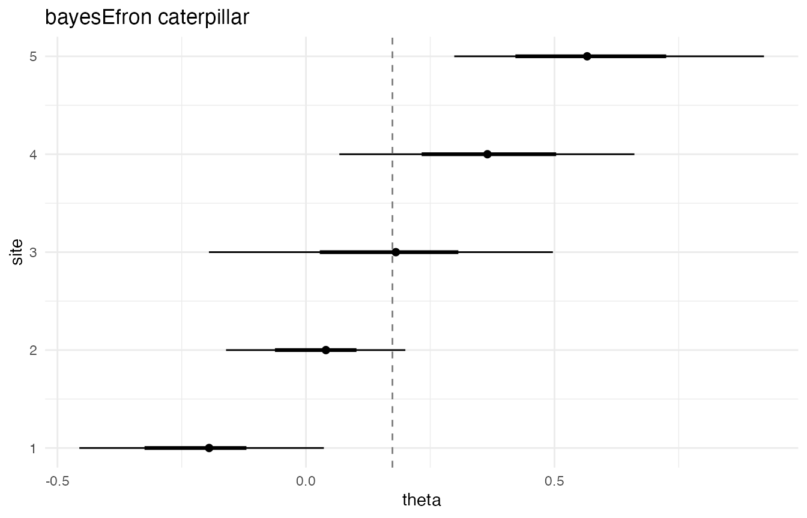

A7 · Case study — Lee–Sui replication light
Source:vignettes/a7-case-study-lee-sui.Rmd
a7-case-study-lee-sui.RmdBackground — the Lee–Sui benchmark
The Lee–Sui benchmark is the v0.1 release-blocking calibration test
for the random-effects deconvolution fit. It targets a single, narrow
question: do the posterior theta_rep 90% credible intervals
contain the latent site effects at the nominal rate? The test is
necessary because the package’s headline summaries are posterior
intervals on per-site effects
,
and a user relying on a 90% interval needs evidence that the long-run
coverage rate is close to 90% under known data-generating
conditions.
The benchmark holds the data-generating mechanism fixed and varies
the number of sites
across five values:
. Each
defines a scenario; within a scenario the benchmark draws 20 independent
replication datasets from the locked Lee–Sui twin-towers generator and
fits the random-effects model to each. For each replication the test
computes the per-site coverage rate of the nominal 90%
theta_rep interval — the fraction of sites whose
theta_true falls inside the interval — and the headline
statistic is the mean of those 20 replication-level rates. The
acceptance band is [0.87, 0.92]. The band is two-sided on
purpose: aggregate coverage outside that band — either too permissive or
too anti-conservative — falls outside the release gate.
The v0.1.0 release ledger passed at all five
values. The repaired
result, the last to clear, recorded an aggregate coverage of
0.876433333333333 against the same [0.87, 0.92] band; the
four
smaller-
scenarios cleared with more headroom. The five passing rows are recorded
in tests/testthat/verification_targets.csv as
tier3_theta_rep_coverage_paper_realdata_K50 through
tier3_theta_rep_coverage_paper_realdata_K1500. The Tier 3
evidence is benchmark-scoped: it underwrites calibration of
theta_rep intervals on the locked Lee–Sui
all-20-replication fixtures and the default fit configuration, not a
general-purpose calibration claim. Sampler diagnostic flags for
rhat, ess_bulk, and ess_tail are
preserved as calibration-tier metadata on the accepted fits.
The benchmark’s choice of five values is deliberate. The two smallest values, and , exercise the small- regime in which discrete-grid deconvolution is most sensitive to grid and prior choices and in which sampler-level finite-sample noise has the largest effect on per-site intervals. The mid-range values, and , exercise the regime in which most applied multisite analyses operate. The largest value, , exercises the regime in which the underlying mixing distribution is densely sampled and the model’s ability to recover the shape of becomes a leading constraint on coverage. Reading the five rows together — rather than any single row in isolation — is the intended use of the release evidence.
This vignette walks through one replication end to end. It stops short of the full Tier 3 release-evidence matrix — that matrix, with all five values and all 20 replications per , is the subject of M6.
The K=50 fixture
The locked
fixture lives at tests/testthat/_fixtures/lee_sui_K50.rds
and is the smallest of the five Tier 3 fixtures by site count. The
fixture is bundled with the package source tree under
tests/testthat/_fixtures/, not under inst/,
and is therefore not accessible through system.file() to a
vignette built outside the source tree. The present vignette describes
the fixture’s structure from prior inspection and uses a smaller cached
fit for the rendered output; the next section explains the stand-in
framing.
The fixture is a list of 16 named elements. The top-level scalars
record the scenario: K = 50, the primary
replication index, the integer seed, and the
grid_method = "paper_realdata" grid recipe with the locked
grid length and
spline degrees of freedom. The primary replication’s per-site arrays are
theta_hat, sigma, and theta_true,
each of length 50, along with the integer source_row_id and
the tower factor that records which side of the Lee–Sui
twin-towers density each site was drawn from.
A replications slot carries the full all-20-replication
payload: 20 sub-lists, each with the same 15-field replication schema as
the primary entry (replication, dataset_id,
seed, K, theta_hat,
sigma, theta_true, source_row_id,
tower, L, M,
grid_method, expansion,
bound_expansion, and the per-replication grid
metadata). The 20 datasets share the generator and the locked grid
configuration but use distinct sampling seeds, so each replication is a
genuine independent draw from the data-generating mechanism.
The fixture’s metadata$coverage block records the
protocol the release ledger enforces: the nominal level is 0.9, the
aggregation is the mean of replication-level site-coverage rates over 20
replications, the per-replication denominator is the per-site posterior
interval count, failed replications are not silently dropped,
replication identity is keyed by unique input-payload hashes, and
sampler seeding follows the Tier 3 sampler-seed policy. Each of these
six policy fields binds a choice that, left implicit, could move the
headline aggregate by an amount comparable to the half-width of the
acceptance band; recording them on the fixture makes the release
decision rule auditable.
The fixture’s metadata$source block records the lineage
of the underlying scenario, including the public data-generation script,
the public Stan model file, the public
small-
pipeline, the original development script, and the archived appendix
result that serves as the canonical input for the
vector. Each artifact is recorded with a path, a relevant-lines range,
and a SHA-256 digest, so the provenance of the generated
theta_hat, sigma, and theta_true
arrays is reconstructible from the fixture alone.
Loading the cached fit (stand-in)
The vignette uses the five-site cached smoke fit shipped under
inst/examples/cached_fit_re_smoke.rds for all chunks that
produce posterior summary or plot output. The reason is purely a
renderability constraint: the locked
fixture lives in the test-fixtures tree and is not on the install path
that a vignette sees at build time. The cached smoke fixture is a real
bef_fit_re object produced by the package’s eight-stage fit
pipeline on a five-site toy dataset, so it carries the same metadata
schema, the same generated-quantity payload, and the same S3 method
behaviour as a
Lee–Sui fit. The differences are the site count, the iteration budget
(one chain, 100 sampling iterations), and the data-generating mechanism.
A
Lee–Sui fit would expose output of the same shape, scaled to 50 rows
instead of 5 in the per-site tables and to 4 chains with the full
sampling budget in the diagnostic block.
fit <- readRDS(system.file(
"examples", "cached_fit_re_smoke.rds",
package = "bayesEfron"
))Posterior summaries on the cached stand-in
The summary() method returns a
summary.bef_fit object that collects the three
population-level summaries of the prior
,
the sampler-health diagnostic block, the runtime, the locked Stan
SHA-256, and the per-site posterior summary table.
summary(fit)
#> <summary.bef_fit>
#>
#> Prior g:
#> mean: 0.174
#> var: 0.2094
#> sd: 0.4549
#>
#> Diagnostics:
#> Rhat: 1.203
#> ESS bulk: 12.53
#> ESS tail: 105
#> Divergences: 0
#> Max treedepth: 0
#> Effective params: mean 0.3754, sd 0.3722
#> Log marginal lik.: mean -2.433, sd 0.443
#> Runtime: 0.2906 sec
#> Stan SHA-256: 57d1f55c8ccd721800193e61eb247f315be3afd401a19f58a51f84c103ceca3e
#>
#> Theta summary:
#> site mean sd lower upper map
#> 1 -0.1948 0.1713 -0.456 0.036 -0.1956
#> 2 0.0401 0.1471 -0.1608 0.2 0.03862
#> 3 0.1808 0.2128 -0.1952 0.4968 0.1787
#> 4 0.3652 0.1869 0.06716 0.6608 0.363
#> 5 0.5658 0.2197 0.2984 0.9216 0.5847The per-site theta table here has five rows. A genuine
Lee–Sui fit would expose the same column set — site,
mean, sd, lower,
upper, map — with 50 rows; the calibration
test consumes the lower and upper columns of
that 50-row table against the held-out theta_true vector to
compute the replication’s per-site coverage rate.
The confint() method returns the same per-site interval
table as a plain data frame, which is the form the calibration test
consumes:
confint(fit, type = "theta")
#> site lower upper point
#> 1 1 -0.45600 0.03600 -0.19484562
#> 2 2 -0.16080 0.20000 0.04010493
#> 3 3 -0.19524 0.49684 0.18079325
#> 4 4 0.06716 0.66084 0.36515025
#> 5 5 0.29840 0.92160 0.56577011On the
fixture this call would return a 50-row data frame. The benchmark drives
the same call against the held-out theta_true vector for
the replication, counts the fraction of rows for which
lower <= theta_true <= upper holds, and records that
fraction as the replication’s per-site coverage rate. The aggregate over
20 replications is the headline statistic for the
row of the release ledger.
Coverage interpretation
The Tier 3 coverage statistic is built in two stages. Within a single
replication, the posterior fit produces a posterior distribution over
for each of the
sites; the post-processor reduces those draws to a 90% interval per
site, and the per-site coverage rate is the fraction of the
sites for which the held-out theta_true_i lies inside the
interval. Across replications, the aggregate coverage statistic is the
mean of those 20 per-replication rates, weighted equally. The
mean-of-rates aggregation, rather than a pooled fraction over all
sites, is the locked rule recorded under
metadata$coverage$aggregation in the fixture and matches
the release-ledger convention. Failed replications are not silently
dropped: a replication that fails to fit is recorded as a failure and
the release decision is made on the population of 20 replications that
the pipeline actually accepted.
The pre-specified acceptance band is [0.87, 0.92]. The
band is two-sided. The lower bound, 0.87, gives the model a small but
explicit budget for under-coverage: posterior intervals that are
slightly narrow under the data-generating mechanism remain in band
provided the deficit is bounded. The upper bound, 0.92, denies the model
credit for over-conservatism: a release that buys nominal coverage by
inflating intervals well beyond 90% is also out of band.
At the band is wider than the worst-case sampling noise under the protocol. With 20 replications and a per-replication denominator of sites, simulation noise on the aggregate is small relative to the half-width of the band, so a band excursion at is informative about calibration rather than about sampling variability. The release ledger records that the scenario cleared the band with healthy headroom, as did , , and ; the repaired result, 0.876, cleared the lower bound with the slimmest margin of the five and is the documented worst-case scenario for the v0.1.0 release.
The Tier 3 evidence is intentionally benchmark-scoped: it underwrites the calibration claim on the locked Lee–Sui all-20-replication fixtures under the default fit configuration. It does not underwrite a generic frequentist coverage claim for arbitrary data-generating mechanisms; users analysing data whose mixing distribution differs materially from the Lee–Sui twin-towers generator should treat the band as suggestive rather than guaranteed and consider running a scenario-specific calibration test of their own.
Diagnostics on the case-study fit
The diagnose() method returns the validated
bef_diagnostic payload that the post-processor stored on
the fit object. Running it on the cached stand-in surfaces the small-fit
signature deliberately:
diagnose(fit)
#> <bef_diagnostic>
#> Model family: RE
#> Rhat max: 1.203
#> ESS bulk min: 12.53
#> ESS tail min: 105
#> Divergences: 0
#> Max treedepth hits: 0
#> Runtime: 0.2906 sec
#> Stan SHA-256: 57d1f55c8ccd721800193e61eb247f315be3afd401a19f58a51f84c103ceca3e
#> Effective params: mean 0.3754; sd 0.3722The cached fit was sampled with one chain and 100 sampling iterations
and so trips the conventional thresholds on
and bulk ESS; A5 documents those thresholds and the remediation recipe.
A real
Lee–Sui fit uses four chains, 1000 warmup iterations, and 3000 sampling
iterations under the default fit configuration; that envelope makes
diagnostics reviewable on the post-warmup draws. Sampler-flag metadata
for rhat, ess_bulk, and ess_tail
that survives the
larger-
refits is preserved as calibration-tier metadata and does not
unilaterally invalidate the Tier 3 coverage acceptance: the release
ledger treats the aggregate coverage and the diagnostic flags as
separable evidence streams.
Caterpillar plot of latent effects
The caterpillar view is the canonical per-site posterior summary. Each row shows the credible interval for one site, with a heavier inner segment at the inter-quartile range and a filled point at the posterior mean; a dashed vertical reference line marks the posterior mean of .
plot(fit, type = "caterpillar")
On the cached five-site stand-in the plot has five rows. A
Lee–Sui fit would produce a 50-row caterpillar; the v0.1 plot method
draws posterior means and credible intervals for each row but does not
currently overlay the held-out theta_true marks. For
per-site coverage the workflow consumes the numeric
theta_rep_draws rather than the plot. The aggregate
coverage statistic is the count of in-coverage rows divided by 50,
averaged across the 20 replications of the scenario. A6 documents the
four S3 plot views in full, including the prior-summary, sensitivity,
and diagnostic views that complement the caterpillar.
What’s next
- M3 · Bayesian random-effects hierarchy — the mathematical write-up of the / hierarchy that the Lee–Sui benchmark stress-tests.
- M5 · The Stan model and the cache — the locked Stan source, the eight-stage fit pipeline, and the cache contract behind the fit object whose schema this vignette traces.
- M6 · Verification and calibration — the full Tier 3 release evidence matrix across all five values and all 20 replications per , including the repaired row that closed the release ledger.